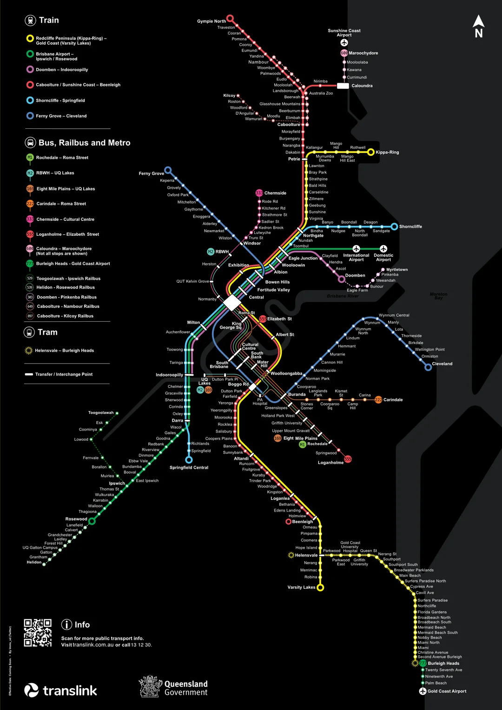

Cool Maps / Posters¶
Here are some cool maps and posters of the SEQ / QLD / AUS rail network that I found. And some other ones too.
See also: QR Network Schematic, Railway map of Queensland (1939)
2024 Translink Map w/ CRR and Railbus¶
I think it has the new CRR line pairings, but I'm not really sure what they're going to be.

Sourced from https://www.reddit.com/r/BrisbaneTrains/comments/1hrlj4d/translink_crr_map_with_railbus_lines/
RailMaps¶
RailMaps (https://railmaps.com.au/) has some cool maps of Australian rail networks.
SMU200 Technical Blueprint¶
I made this blueprint in photoshop using the Design B carriage layout. It is A1 size if you want to print it in that or any other A size like A4. Hope you like it!